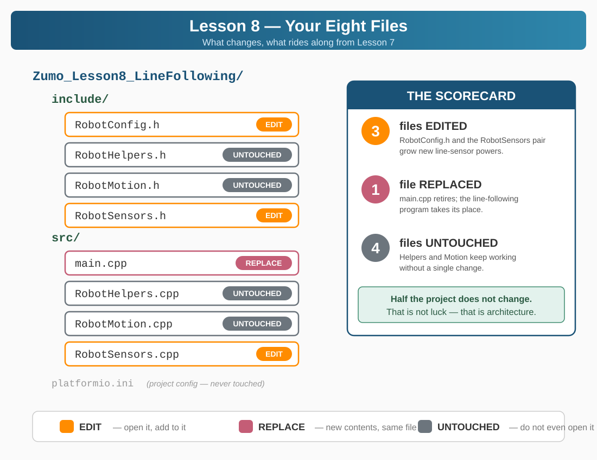

Section 5 gave you the algorithm. Now you build it — into the eight-file architecture you assembled in Lesson 7. Nothing gets rebuilt from scratch: you edit three files and replace one, and the other four ride along untouched. That's the whole point of the architecture.


NOTE
HOW THIS SECTION WORKS — plan-first, same as Lesson 7
- 📖 Explanation — what this step changes and why
- 🎯 The goal — what the file must accomplish. No pseudo-code provided.
- 📝 MY PLAN — write your plan into the MY PLAN block at the top of
main.cpp before you touch code. Plain English, numbered. This block is part of your grade.
- ⌨️ Build from YOUR plan — hints point at the Quick Reference; the thinking is yours
- 🔓 Compare — the reveal shows a worked version. Different code, same behavior = a win.
- ✅ Build green before moving on
Three steps break the pattern: Step 1 is a copy ritual, Step 9 is upload-and-tune choreography, and Step 4 is where this lesson's red build lives — except this time nobody stages it for you. If Step 3's extern is wrong, Step 4's build goes red and the diagnosis is yours. Lesson 7 walked you through this error species; today you meet it solo.
Fell behind? File wrecked? The Maker has your back.
The ZUMO Project Maker has a CATCH-UP menu for this lesson: pick the entry named for the step you're about to start, and it opens a project — all eight files included — built up to that exact point. No Lesson 7 project to copy? The Step 1 entry is the finished Lesson 7 build.
📋 WHAT YOU NEED
- VS Code with PlatformIO installed
- Zumo 32U4 robot connected via USB
- Your finished Lesson 7 project (or the Maker's Step 1 preload)
- A line track: black electrical tape on a white surface, with at least one curve
Step 1 — Copy Your Lesson 7 Project
Same move as last lesson's ending, in reverse: your Lesson 7 build becomes Lesson 8's starting point. Copy, don't move — Lesson 7 stays intact as your fallback.

DO THIS NOW
- In File Explorer, copy your entire
Zumo_Lesson7 folder
- Paste and rename the copy to
Zumo_Lesson8_LineFollowing
- Open the new folder in VS Code (File → Open Folder — the folder, not a file)

CHECKPOINT
You should see eight files: include/ holding RobotConfig.h, RobotSensors.h, RobotHelpers.h, RobotMotion.h — and src/ holding RobotSensors.cpp, RobotHelpers.cpp, RobotMotion.cpp, main.cpp. Count them. Missing any? Your Lesson 7 build wasn't finished — grab the Maker's Step 1 CATCH-UP entry instead.
Step 2 — RobotConfig.h: The Six Dials of Line Following
Every tunable behavior in this lesson gets a named constant in RobotConfig.h — that's the file's whole job. Line following needs six.
THE GOAL
Add a LINE FOLLOWING CONSTANTS block to the end of RobotConfig.h covering: the setpoint (where "centered" is on the 0–4000 position scale), a cruise speed, the proportional gain, a speed ceiling, a lost-line threshold, and how long the robot may coast across a gap. Everything already in the file stays.
MY PLAN — yours, before any code
Before peeking: list the six settings a line follower needs in your own words — a name, a type, and a first-guess value for each. Section 5's formula names three of them outright.
🧭 Hints, not answers: starting values live in ⚡ Quick Reference → Typical Values — and the position scale (0–4000, center 2000) is in ⚡ Quick Reference → The Formula.
🔓 Compare with a worked RobotConfig.h (complete file)
/*
=====================================================
ROBOTCONFIG.H - Robot Calibration Settings
=====================================================
All robot-specific values in ONE place!
Edit this file to tune your robot's performance.
=====================================================
*/
#pragma once
// ===== PHYSICAL PROPERTIES =====
// These values define your robot's hardware
// Encoder counts per complete wheel rotation
// (12 counts/motor rotation x 75.81 gear ratio = 909.7)
const float COUNTS_PER_ROTATION = 909.7;
// Wheel diameter in millimeters (measure yours!)
const float WHEEL_DIAMETER_MM = 39.0;
// Wheel circumference = pi x diameter
const float WHEEL_CIRCUMFERENCE_MM = 3.14159 * WHEEL_DIAMETER_MM;
// Encoder counts per centimeter of travel
const float COUNTS_PER_CM = COUNTS_PER_ROTATION / (WHEEL_CIRCUMFERENCE_MM / 10.0);
// ===== TURNING PROPERTIES =====
// Distance between wheel centers - this is a CALIBRATION value!
// Start at 85.0 (physical measurement), then tune up until 90 degree
// turns are accurate. Typical tuned values: 98-115 depending on
// surface and wheel wear.
const float WHEEL_BASE_MM = 85.0;
// Circumference of the turn circle
const float TURN_CIRCUMFERENCE_MM = 3.14159 * WHEEL_BASE_MM;
// Encoder counts per degree of rotation
const float COUNTS_PER_DEGREE = (TURN_CIRCUMFERENCE_MM / 360.0) *
(COUNTS_PER_ROTATION / WHEEL_CIRCUMFERENCE_MM);
// ===== SPEED SETTINGS =====
// Adjust these to change robot behavior
const int DRIVE_SPEED = 150; // Speed for straight driving (0-400)
const int TURN_SPEED = 150; // Speed for turning (0-400)
// ===== BATTERY THRESHOLDS =====
const int BATTERY_GOOD = 4800; // millivolts - fully charged
const int BATTERY_LOW = 4200; // millivolts - charge soon
// ===== LINE FOLLOWING CONSTANTS (NEW for Lesson 8) =====
const int LINE_CENTER = 2000; // Setpoint - line under middle sensor (0-4000 range)
const int BASE_SPEED = 150; // Forward speed when centered (0-400)
const float KP = 0.1; // Proportional gain (tune this!)
const int MAX_SPEED = 300; // Speed limit after correction
const int LINE_LOST_THRESHOLD = 200; // Calibrated sum below this = no line
const unsigned long MAX_GAP_TIME = 500; // Max milliseconds to cross a gap
CHECKPOINT
Build (✓). Green — constants nobody reads yet are perfectly legal. Your numbers differ from the reveal? Fine, if you can defend them; you'll tune them all in Step 9 anyway.
Step 3 — RobotSensors.h: One More extern, Four New Promises
Open RobotSensors.h and read its own comment header: "In later lessons, sensor functions will be added here." Today is that day. The line sensor array joins the hardware roster, and four functions get declared.
THE GOAL
One new hardware declaration — lineSensors, type Zumo32U4LineSensors, joining the extern block — plus prototypes for the four functions from the Section 5.4 table: initLineSensors(), calibrateLineSensors(), readLinePosition() (returns int), isLineVisible() (returns bool).
MY PLAN — yours, before any code
Write the extern line and all four prototypes from memory — return type, name, parentheses, semicolon. Then answer in your plan: why does the .h line need extern when the .cpp line must not have it?
🧭 Hints, not answers: the one-word difference and why it matters: ⚡ Quick Reference → The extern Pattern. Function signatures: ⚡ Quick Reference → Line Sensor Functions.

WARNING
THE EXTERN TRAP — read this before you build
extern Zumo32U4LineSensors lineSensors; in the header and Zumo32U4LineSensors lineSensors; in the .cpp look almost identical. The single word extern is the difference between a promise and a creation. Get it wrong and nothing complains — yet. Step 4's build is where it surfaces.
🔓 Compare with a worked RobotSensors.h (complete file)
/*
=====================================================
ROBOTSENSORS.H - Hardware & Sensor Declarations
=====================================================
Declares ALL hardware objects used across the project.
The actual objects are DEFINED in RobotSensors.cpp.
The keyword "extern" means: "this object exists
somewhere else - let me use it here."
=====================================================
*/
#pragma once
#include <Zumo32U4.h>
// ===== EXTERN HARDWARE DECLARATIONS =====
// These tell other files "these objects exist"
// The actual objects are created in RobotSensors.cpp
extern Zumo32U4OLED display;
extern Zumo32U4Buzzer buzzer;
extern Zumo32U4Motors motors;
extern Zumo32U4Encoders encoders;
extern Zumo32U4ButtonA buttonA;
extern Zumo32U4ButtonB buttonB;
extern Zumo32U4ButtonC buttonC;
extern Zumo32U4LineSensors lineSensors; // NEW for Lesson 8
// ===== LINE SENSOR FUNCTIONS (NEW for Lesson 8) =====
void initLineSensors();
void calibrateLineSensors();
int readLinePosition();
bool isLineVisible();
CHECKPOINT
Build (✓). Green — declarations are promises, and nothing has tried to collect on them yet. If your extern is wrong, this build still passes. The next one won't.
Step 4 — RobotSensors.cpp: Creating the Hardware — and Facing the Red Build Solo
The header promised; this file delivers. The real lineSensors object gets created here, two module-private variables move in, and the first two functions — init and the calibration spin — get bodies.
THE GOAL
Add #include "RobotConfig.h" near the top (the new code reads LINE_CENTER). Define lineSensors (no extern!), sensorValues[5], and lastPosition. Then write initLineSensors() — one library call, initFiveSensors() — and calibrateLineSensors(): 100 calibration passes while spinning, first half leftward, second half rightward, motors off at the end.
MY PLAN — yours, before any code
Plan the calibration choreography as numbered pseudo-code: how do you get 50 spin-left passes and 50 spin-right passes out of one loop? What single line runs on every pass? What must happen after the loop, no matter what?
🧭 Hints, not answers: spin = opposite wheel signs (Lesson 3). The one-per-pass line is lineSensors.calibrate(); — signatures in ⚡ Quick Reference → Line Sensor Functions.
🔓 Compare with a worked RobotSensors.cpp at this step (complete file)
/*
=====================================================
ROBOTSENSORS.CPP - Hardware Definitions
=====================================================
This file CREATES all hardware objects.
This is the ONLY file that creates them.
Other files use #include "RobotSensors.h" to access them.
In later lessons, sensor functions will be added here.
=====================================================
*/
#include <Zumo32U4.h>
#include "RobotSensors.h"
#include "RobotConfig.h" // NEW - needed for LINE_CENTER, LINE_LOST_THRESHOLD
// ===== HARDWARE OBJECT DEFINITIONS =====
// These are the REAL objects - created exactly ONCE
Zumo32U4OLED display;
Zumo32U4Buzzer buzzer;
Zumo32U4Motors motors;
Zumo32U4Encoders encoders;
Zumo32U4ButtonA buttonA;
Zumo32U4ButtonB buttonB;
Zumo32U4ButtonC buttonC;
// ===== LINE SENSOR HARDWARE (NEW for Lesson 8) =====
Zumo32U4LineSensors lineSensors; // NO extern - this file CREATES it
unsigned int sensorValues[5]; // Array to store the five readings
int lastPosition = LINE_CENTER; // Last known line position
// ===== LINE SENSOR FUNCTIONS (NEW for Lesson 8) =====
void initLineSensors() {
lineSensors.initFiveSensors();
}
void calibrateLineSensors() {
for (int i = 0; i < 100; i++) {
if (i < 50) {
motors.setSpeeds(-100, 100); // Spin left
} else {
motors.setSpeeds(100, -100); // Spin right
}
lineSensors.calibrate();
}
motors.setSpeeds(0, 0);
}

TIP
THE GRADUATED RED BUILD — no script this time
Lesson 7 staged its linker error for you, line by line. This lesson doesn't. Build now. If Step 3's extern is right, you go green and move on. If it's wrong, you meet one of two errors — same root cause, two faces, depending on what's in your files:
| What the build says |
When you get this face |
redefinition of 'Zumo32U4LineSensors lineSensors' — a compiler error in RobotSensors.cpp | The header line lost its extern and the .cpp defines it too — one file just saw two creations |
multiple definition of 'lineSensors' — a linker error naming several .o files | The header line lost its extern and you treated that as the creation — now every file that includes the header creates its own |
Diagnose solo: which face do you have, which file is guilty, what's the one-word fix? Section 8 has the table if you're truly stuck. Went green first try? Earn the encounter anyway: delete the extern keyword, build, read the error, put it back. Two minutes now saves twenty in Lessons 12 and 13.
CHECKPOINT
Build ends green (after your detour, if you took one). The hardware exists, the calibration spin has a body, and both header promises so far are kept.
Step 5 — RobotSensors.cpp: Reading the Line — the Right API for the Job
The library gives you three ways to read the sensors, and picking the right one is the actual lesson here. read() returns raw timings — on plain white paper those still land in the hundreds, so raw values can't reliably tell "white floor" from "faint line." The calibration spin you just wrote exists to fix exactly that: after it, readCalibrated() rescales every sensor to 0 = your white, 1000 = your black. And readLine() goes one further: calibrated read plus a weighted average that returns the line's position, 0–4000.
THE GOAL
Two functions finish the module. readLinePosition(): call readLine(sensorValues), remember the result in lastPosition, return it. isLineVisible(): take a calibrated reading, sum all five sensors, and answer — is that sum above LINE_LOST_THRESHOLD?
MY PLAN — yours, before any code
Plan isLineVisible() as pseudo-code, then answer in your plan: on a pure-white gap, roughly what will the calibrated sum be — and what would the raw sum be? Why does only one of those make the 200 threshold meaningful?
🧭 Hints, not answers: all three read calls, with what they return: ⚡ Quick Reference → Line Sensor Functions.
🔓 Compare with the finished RobotSensors.cpp (complete file)
/*
=====================================================
ROBOTSENSORS.CPP - Hardware Definitions
=====================================================
This file CREATES all hardware objects.
This is the ONLY file that creates them.
Other files use #include "RobotSensors.h" to access them.
In later lessons, sensor functions will be added here.
=====================================================
*/
#include <Zumo32U4.h>
#include "RobotSensors.h"
#include "RobotConfig.h" // NEW - needed for LINE_CENTER, LINE_LOST_THRESHOLD
// ===== HARDWARE OBJECT DEFINITIONS =====
// These are the REAL objects - created exactly ONCE
Zumo32U4OLED display;
Zumo32U4Buzzer buzzer;
Zumo32U4Motors motors;
Zumo32U4Encoders encoders;
Zumo32U4ButtonA buttonA;
Zumo32U4ButtonB buttonB;
Zumo32U4ButtonC buttonC;
// ===== LINE SENSOR HARDWARE (NEW for Lesson 8) =====
Zumo32U4LineSensors lineSensors; // NO extern - this file CREATES it
unsigned int sensorValues[5]; // Array to store the five readings
int lastPosition = LINE_CENTER; // Last known line position
// ===== LINE SENSOR FUNCTIONS (NEW for Lesson 8) =====
void initLineSensors() {
lineSensors.initFiveSensors();
}
void calibrateLineSensors() {
for (int i = 0; i < 100; i++) {
if (i < 50) {
motors.setSpeeds(-100, 100); // Spin left
} else {
motors.setSpeeds(100, -100); // Spin right
}
lineSensors.calibrate();
}
motors.setSpeeds(0, 0);
}
int readLinePosition() {
lastPosition = lineSensors.readLine(sensorValues);
return lastPosition;
}
bool isLineVisible() {
lineSensors.readCalibrated(sensorValues); // Calibrated: 0 = white, 1000 = black
unsigned int sum = 0;
for (int i = 0; i < 5; i++) {
sum += sensorValues[i];
}
return sum > LINE_LOST_THRESHOLD;
}
CHECKPOINT
Build (✓) green. RobotSensors.cpp is done for this lesson — every promise in the header now has a body. All that's left is the file that uses them.
Step 6 — main.cpp: The Rebase — Boot, Gate, Calibrate
Lesson 7's tuning-mode main retires. The new main.cpp keeps the boot ritual you built there — serial + battery report — and adds the line-following startup: sensor init, the safety gate, and the calibration ceremony. The interesting part isn't the code. It's the order.
WARNING
Calibration spins the robot — it's motion, same as driving. The old version of this lesson calibrated before any gate. Not anymore: waitForStart() comes before calibration, so the A-press is the one rule with zero exceptions — nothing moves until A.
THE GOAL
Replace main.cpp's contents (keep the Maker-stamped header and #include <Zumo32U4.h> line). State: currentKp and isRunning. One display helper: showStatus() — RUNNING/STOPPED, current Kp, and the button legend. Then setup() in the right order, and a loop() that polls checkBattery() and nothing else — yet.
MY PLAN — yours, before any code
Six setup phases, your plan puts them in order and defends it: serial init · battery report · sensor init · safety gate · calibration · status screen. One of these orderings can spin a robot into someone's hand. Which phase pins the gate's position, and why?
🧭 Hints, not answers: the boot report is Lesson 7 choreography — copy it from your Lesson 7 main (swap the title to Lesson 8, and show Kp where the encoder numbers were). Copying your own verified work is engineering. Which functions live where: ⚡ Quick Reference → Where Does Code Go?.
🔓 Compare with a worked main.cpp at this step (complete file)
#include "RobotConfig.h"
#include "RobotSensors.h"
#include "RobotHelpers.h"
// ===== LINE FOLLOWING STATE =====
float currentKp = KP; // Live-tunable copy of KP
bool isRunning = false; // Is the robot following right now?
void showStatus() {
display.setLayout21x8();
display.clear();
display.gotoXY(0, 0);
display.print(isRunning ? F("RUNNING") : F("STOPPED"));
display.gotoXY(0, 2);
display.print(F("Kp: "));
display.print(currentKp, 2);
display.gotoXY(0, 4);
display.print(F("A- B:Go C+"));
}
// ===== SETUP =====
void setup() {
Serial.begin(115200);
unsigned long serialStart = millis();
while (!Serial && (millis() - serialStart < 2000)) {
delay(10); // Wait up to 2s for USB serial connection
}
delay(500);
Serial.println(F("=== Lesson 8: Line Following ==="));
// ===== BATTERY REPORT =====
int batteryVoltage = readBatteryMillivolts();
int battWhole = batteryVoltage / 1000;
int battDecimal = (batteryVoltage / 10) % 100;
Serial.print(F("Battery: "));
Serial.print(battWhole);
Serial.print(F("."));
if (battDecimal < 10) Serial.print(F("0"));
Serial.print(battDecimal);
Serial.print(F("V ("));
Serial.print(batteryVoltage);
Serial.println(F("mV)"));
display.clear();
display.setLayout21x8();
display.print(F("===== Lesson 8 ====="));
display.gotoXY(0, 2);
display.print(F("Battery: "));
display.print(battWhole);
display.print(F("."));
if (battDecimal < 10) display.print(F("0"));
display.print(battDecimal);
display.print(F("V"));
display.gotoXY(0, 4);
display.print(F("Status: "));
if (batteryVoltage >= BATTERY_GOOD) {
display.print(F("GOOD"));
ledGreen(1);
} else if (batteryVoltage >= BATTERY_LOW) {
display.print(F("LOW"));
ledYellow(1);
buzzer.playNote(NOTE_A(4), 200, 15);
} else {
display.print(F("CHARGE!"));
ledRed(1);
buzzer.playNote(NOTE_A(3), 500, 15);
}
display.gotoXY(0, 6);
display.print(F("Kp: "));
display.print(currentKp, 2);
delay(2500);
ledGreen(0);
ledYellow(0);
ledRed(0);
// ===== LINE SENSOR SETUP =====
initLineSensors();
// ===== SAFETY GATE - before ANY motion =====
// Calibration spins the robot, so the A-gate comes FIRST.
waitForStart();
// ===== CALIBRATION =====
display.setLayout21x8();
display.clear();
display.gotoXY(0, 0);
display.print(F("Place robot on line"));
display.gotoXY(0, 2);
display.print(F("Press B to calibrate"));
buttonB.waitForButton();
display.clear();
display.gotoXY(0, 0);
display.print(F("Calibrating..."));
display.gotoXY(0, 2);
display.print(F("(spinning)"));
delay(500);
calibrateLineSensors();
display.clear();
display.gotoXY(0, 0);
display.print(F("Calibration done!"));
delay(1000);
showStatus();
}
// ===== MAIN LOOP =====
void loop() {
checkBattery(); // A+B battery report (standard helper)
}
CHECKPOINT
Build, upload, and run the sequence on the robot: boot report (2.5 s, no button) → "Press A to start" → A → "Press B to calibrate" → B → it spins → "Calibration done!" → STOPPED status with Kp 0.10. First hardware moment of the lesson — enjoy it. The robot can't follow anything yet; that's the next step.
Step 7 — followLine(): The Whole Lesson in Eight Lines
Everything so far was plumbing. This is the algorithm — Section 5's formula becoming a function. When people say "proportional control," they mean these eight lines.
THE GOAL
Write followLine() from your plan. Then wire the run switch into loop(): B toggles isRunning (with the 3-2-1 countdown from Lesson 7 before it goes, motors hard-stopped when it stops), and while running, every pass calls followLine().
MY PLAN — yours, before any code
Pseudo-code the algorithm with no peeking at Section 5, then check yourself against it: get the position → how far from center? → scale it by the gain → which motor gets +, which gets −? → what keeps the math from commanding speed 550? Write the answer to that last one as a real line.
🧭 Hints, not answers: the four formula lines: ⚡ Quick Reference → The Formula. The countdown block is choreography — copy it from Lesson 7's C-button routine.
🔓 Compare: followLine() and the new loop() (the rest of the file is exactly as Step 6 built it)
void followLine() {
int position = readLinePosition();
int error = position - LINE_CENTER;
int correction = currentKp * error;
int leftSpeed = BASE_SPEED + correction;
int rightSpeed = BASE_SPEED - correction;
leftSpeed = constrain(leftSpeed, -MAX_SPEED, MAX_SPEED);
rightSpeed = constrain(rightSpeed, -MAX_SPEED, MAX_SPEED);
motors.setSpeeds(leftSpeed, rightSpeed);
}
// ===== MAIN LOOP =====
// B = start/stop (A and C get their jobs in Step 8)
void loop() {
if (!isRunning) {
checkBattery(); // A+B battery report - only while stopped, never mid-run
}
if (buttonB.getSingleDebouncedPress()) {
isRunning = !isRunning;
if (isRunning) {
// 3-2-1 countdown before starting
for (int count = 3; count > 0; count--) {
display.setLayout21x8();
display.clear();
display.gotoXY(0, 0);
display.print(count);
buzzer.playNote(NOTE_C(5), 150, 15);
delay(1000);
}
display.clear();
display.gotoXY(0, 0);
display.print(F("GO!"));
buzzer.playNote(NOTE_C(6), 300, 15);
delay(500);
} else {
motors.setSpeeds(0, 0);
}
showStatus();
}
if (isRunning) {
followLine();
}
}
WARNING
First drive: robot on the line, open floor, hands clear before you press B. Kp 0.10 is deliberately gentle — expect lazy curves, not disasters. And know your kill switch: B stops it.
CHECKPOINT
Upload. A → B calibrate → B go: the robot follows the line. Wobbling? That's oscillation, and it's Section 7's whole topic — not a bug, a tuning signal. Lost the line on the curve? It just drives on blindly for now, steering at full lock — noted, unfixed, and exactly what Step 8 is for.
Step 8 — handleGap() and the Tuning Buttons
Two loose ends from your first drive. One: a lost line currently means a blind robot steering at full lock forever. Two: tuning Kp means re-flashing firmware for every 0.02 — miserable. Both get fixed here, and both were designed into Step 6: the third state variable and the A–/C+ legend on the status screen have been waiting for this step.
THE GOAL
Add gapStartTime to the state block. Write handleGap(): first frame of a gap stamps the clock; within MAX_GAP_TIME, hold course straight at BASE_SPEED; past it, stop, flip isRunning off, and say LINE LOST. Rewire the run branch: line visible → reset the stamp, follow; not visible → handleGap(). Then the tuning twins in loop(): A drops currentKp by 0.02 (floor 0.02), C raises it (ceiling 1.0) — stopped only, with a showStatus() and a small debounce delay each.
MY PLAN — yours, before any code
Plan the timer pattern in three numbered lines — stamp once, check elapsed, act on timeout — then answer: why must the visible-branch reset gapStartTime to 0, and what breaks on the second gap if it doesn't? Write the A-button block; the C block is its mirror twin.
🧭 Hints, not answers: the elapsed-time idiom is millis() - gapStartTime > MAX_GAP_TIME — same millis() pattern as Lesson 6's timers. Who lives where: ⚡ Quick Reference → Where Does Code Go?.
🔓 Compare: the full state block, handleGap(), and the finished loop()
// ===== LINE FOLLOWING STATE =====
float currentKp = KP; // Live-tunable copy of KP
bool isRunning = false; // Is the robot following right now?
unsigned long gapStartTime = 0; // When did the line disappear?
void handleGap() {
if (gapStartTime == 0) {
gapStartTime = millis();
}
if (millis() - gapStartTime > MAX_GAP_TIME) {
motors.setSpeeds(0, 0);
isRunning = false;
display.setLayout21x8();
display.clear();
display.gotoXY(0, 0);
display.print(F("LINE LOST!"));
display.gotoXY(0, 2);
display.print(F("Press B to retry"));
return;
}
motors.setSpeeds(BASE_SPEED + TRIM, BASE_SPEED); // Blind AND straight = TRIM
}
Why TRIM here — and NOT in followLine()
In a gap the robot is blind. No line, nothing to read, nothing correcting it — it is driving on faith, exactly like driveDistance() in Lesson 6. That is an OPEN loop, and an open loop needs TRIM or it curves.
followLine() is the opposite. It reads the line fifty times a second and steers on what it sees. It is a CLOSED loop, and correcting motor bias is already its job. Add TRIM there and the robot fights its own controller — the P-term would spend its day undoing a constant you put in on purpose.
Is anything watching? If not, it needs TRIM.
// ===== MAIN LOOP =====
// A = Kp down B = start/stop C = Kp up
void loop() {
if (!isRunning) {
checkBattery(); // A+B battery report - only while stopped, never mid-run
}
if (buttonA.isPressed() && !isRunning) {
currentKp -= 0.02;
if (currentKp < 0.02) currentKp = 0.02;
showStatus();
delay(200);
}
if (buttonB.getSingleDebouncedPress()) {
isRunning = !isRunning;
if (isRunning) {
// 3-2-1 countdown before starting
for (int count = 3; count > 0; count--) {
display.setLayout21x8();
display.clear();
display.gotoXY(0, 0);
display.print(count);
buzzer.playNote(NOTE_C(5), 150, 15);
delay(1000);
}
display.clear();
display.gotoXY(0, 0);
display.print(F("GO!"));
buzzer.playNote(NOTE_C(6), 300, 15);
delay(500);
} else {
motors.setSpeeds(0, 0);
}
showStatus();
}
if (buttonC.isPressed() && !isRunning) {
currentKp += 0.02;
if (currentKp > 1.0) currentKp = 1.0;
showStatus();
delay(200);
}
if (isRunning) {
if (isLineVisible()) {
gapStartTime = 0; // Line is back - reset the gap timer
followLine();
} else {
handleGap();
}
}
}

INSIGHT
Notice what checkBattery() got: a stopped-only guard. The helper blocks while A+B are held — freezing the loop mid-run would leave the motors locked at their last speeds, driving blind. Guard rule: never block the loop while the robot is moving.
CHECKPOINT
Build green, upload. Cover part of the line with paper wider than ~8 cm: the robot coasts straight, then stops with LINE LOST — on purpose. Press A and C while stopped and watch Kp step by 0.02 on the status screen. Your whole tuning workflow is now three buttons, zero re-flashes.
Step 9 — Drive Day: Upload, Calibrate, Tune
Pure choreography from here — the code is done. This is the button liturgy you'll run every single session with this robot, so run it enough times that your hands know it.
| You press |
Robot does |
Rule it obeys |
| — (power on) | Boot report: battery + Kp, 2.5 s, no acknowledge | Report, don't nag |
| A at the gate | Arms the robot | Nothing moves before A — calibration included |
| B (on the line) | Calibration spin, left then right | Calibrate on the track you'll run, every session |
| B | 3-2-1 countdown → follows the line | B is go and stop — your kill switch |
| A / C while stopped | Kp −0.02 / +0.02 on the status screen | Tune between runs, not mid-run |
| A+B held, while stopped | Battery report | Standard helper, Lesson 4 vintage |
THE TUNING RITUAL
- Run the track at Kp 0.10. Watch the character of the drive, not just success/failure.
- Drifts wide on curves → C (more gain). Wiggles on straights → A (less gain).
- Change one thing, run again. One variable per run — that's the entire discipline of tuning.
- Converged? Write your Kp down and bake it into
KP in RobotConfig.h. Section 7's tables take it from here.
CHECKPOINT
Robot completes your full track — curves included — at a Kp you chose from evidence and recorded. That number is your robot's number; the robot at the next desk will disagree, and both of you are right.
↑ Back to top
Now that you've implemented line following, let's look at the coding patterns that make your control system robust and reusable.
8A.1 Function Parameters: Passing Information
When you write followLine(), you're reading the global currentKp value. But what if you wanted to follow the line with different Kp values at different speeds? That's where function parameters come in:
Current approach (hardcoded):
void followLine() {
int position = readLinePosition();
int error = position - LINE_CENTER;
int correction = currentKp * error; // ← uses global currentKp
}
Better approach (parameterized):
void followLine(float kp) {
int position = readLinePosition();
int error = position - LINE_CENTER;
int correction = kp * error; // ← uses parameter kp
}
 Function Parameter
Function ParameterA value you pass INTO a function that the function can use. Allows flexibility without global variables.
8A.2 Return Values: Getting Data Back
readLinePosition() returns an integer. But how do you know if that value is valid? What if the line was lost? Advanced code checks return values:
int readLinePosition() {
lineSensors.read(sensorValues);
unsigned int sum = 0;
for (int i = 0; i < 5; i++) {
sum += sensorValues[i];
}
// Return -1 to signal "no line detected"
if (sum < LINE_LOST_THRESHOLD) {
return -1;
}
return lineSensors.readLine(sensorValues);
}
Checkpoint
In your main.cpp, you should check:
int pos = readLinePosition();
if (pos == -1) {
// Handle lost line
} else {
// Use the position
}
8A.3 Error Handling Patterns
Robust control code anticipates failure. For line following, failures include:
| Failure Mode |
Detection |
Response |
| Line lost in gap |
All sensors read low |
Go straight; start gap timer |
| Gap too long |
Timer exceeds MAX_GAP_TIME |
Stop; display "LINE LOST!" |
| Motor speed saturated |
Correction too large |
Clamp to MAX_SPEED with constrain() |
| Sensors not calibrated |
Sensor values always 0 or 1000 |
Force recalibration on startup |
8A.4 Proportional Control Structure
The complete pattern you've implemented in this lesson:
void handleRobotControl() {
// 1. READ the current state
int position = readLinePosition();
// 2. CALCULATE error
int error = position - SETPOINT;
// 3. APPLY proportional formula
int correction = Kp * error;
// 4. CLAMP the output
correction = constrain(correction, -MAX_CORRECTION, MAX_CORRECTION);
// 5. CONVERT to motor commands
int leftSpeed = BASE_SPEED + correction;
int rightSpeed = BASE_SPEED - correction;
// 6. SEND to motors
motors.setSpeeds(leftSpeed, rightSpeed);
}
NOTE
This Pattern Scales
This same 6-step pattern works for:
- Motor speed control: Compare target RPM to actual RPM, apply correction
- Altitude control (drones): Compare target height to actual height, apply thrust adjustment
- Temperature control: Compare target temp to actual temp, apply heating/cooling
You've just learned a fundamental pattern used in professional control systems worldwide.
8A.5 Tuning as Feedback Loop
When you press buttons A and C to adjust Kp, you're running a manual feedback loop:
1. OBSERVE: Robot oscillates (error is visible)
2. HYPOTHESIZE: "Kp is too high"
3. EXPERIMENT: Press A to decrease Kp
4. MEASURE: Watch robot behavior improve
5. REPEAT until stable
This is exactly how engineers tune real control systems—by observing system behavior and making incremental adjustments.
↑ Back to top
Detective work. Each Maker link below opens the finished build with one deliberate defect planted. The routine: upload it, watch the symptom, predict the culprit before opening a single file, find it, fix it, prove the fix on the track. Every defect here is one the robot can't explain to you — the symptom is all you get, exactly like real debugging.
Mystery 1: Backwards Correction
→ load the sabotaged build — upload and start it on a straight line, on the floor. The instant it drifts a hair off center, it snaps hard away from the line and spirals off. Why away — and why so violently?
💡 Answer
Two characters, one function. The planted lines in followLine():
int leftSpeed = BASE_SPEED - correction;
int rightSpeed = BASE_SPEED + correction;
The signs are swapped, so every correction steers away from the line — which grows the error, which grows the correction. Proportional control with the sign flipped isn't weak, it's a runaway. Swap the signs back.
Mystery 2: The Straight-Liner
→ load the sabotaged build — flawless on the straightaway, sails serenely off every curve, no correction whatsoever. Before opening any file: read the status screen. It has been telling you the answer the whole time.
💡 Answer
The screen says Kp: 0.00. The planted line:
float currentKp = 0.0; // Live-tunable copy of KP
Gain zero → correction zero → a robot that only drives straight. Pressing C revives it until the next reboot — live tuning treats the symptom, the initializer is the disease. Restore float currentKp = KP;.
Mystery 3: The Uncalibrated Run
→ load the sabotaged build — the screen says "Calibrating..." — but the robot never spins — then the instant you press B to go: LINE LOST, while sitting dead-center on a perfect line. The display is lying to you. About what?
💡 Hint
The calibrateLineSensors(); call was deleted from setup — the choreography around it survived, so the screen narrates a calibration that never happens. The library's own source says what happens next: "if not calibrated, do nothing" — readCalibrated() refuses to write, sensorValues stays all zeros, the sum never beats the threshold, and the robot is blind by protocol. Put the call back — and remember Step 5: calibration isn't ceremony, it's what makes the 0–1000 scale exist.
Mystery 4: The Eternal Gap
→ load the sabotaged build — floor only, spotter ready — this one does not stop on its own. It follows fine, but at the first gap it coasts straight… and keeps coasting. Forever. What gave up: the gap logic, or the number it was given?
💡 Answer
The logic is perfect. The planted constant:
const unsigned long MAX_GAP_TIME = 500000; // Max milliseconds to cross a gap
500,000 ms is an eight-minute gap allowance — the timeout exists and can essentially never fire. A safety limit that can't trigger is indistinguishable from no safety at all; that's the whole lesson. Restore 500.
Mystery 5: The Blind Robot
→ load the sabotaged build — calibration runs correctly this time — real spin and all — and it still declares LINE LOST instantly, parked on a jet-black line. Same symptom as Mystery 3, so: same cause? Prove your answer before you look.
💡 Answer
Different culprit entirely. The planted constant:
const int LINE_LOST_THRESHOLD = 5001; // Calibrated sum below this = no line
Five sensors × 1000 max = a highest possible sum of 5000. The visibility test can never pass — not on any line, ever. Same symptom as Mystery 3, opposite end of the pipeline: one starves the reading, the other sets an impossible bar. Same symptom ≠ same cause is the most valuable sentence in debugging. Restore 200.
↑ Back to top
 . That pivot — hard one way below the threshold, hard the other above it — was bang-bang control. You have already written the controller this section retires.
. That pivot — hard one way below the threshold, hard the other above it — was bang-bang control. You have already written the controller this section retires. LEARN: Bang-Bang vs. P-Control
LEARN: Bang-Bang vs. P-Control —
—  Looking Ahead: The Full PID
Looking Ahead: The Full PID BRAIN CHECK 01 · MENTAL KNOWLEDGE CHECK — Answer From Your Head
BRAIN CHECK 01 · MENTAL KNOWLEDGE CHECK — Answer From Your Head ENGINEER’S LOG #08 — feeds: Software (innovative solutions)
ENGINEER’S LOG #08 — feeds: Software (innovative solutions)